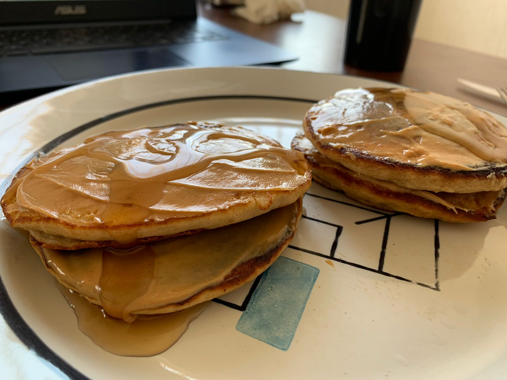

Unbelievable Banana Pancakes Recipe
These delicious banana pancakes is the only breakfast recipe you'll really ever need.
They have been my go-to since my first semesters of university and I can't get enough of them. Just look at these beauties!

Ingredients
This is a pretty straightforward recipe, so the ingredients list is not huge.
- 3 medium bananas (duh)
- 3 medium eggs
- 1/4 cup of all purpose flour
- 1 teaspoon of baking powder
- Butter or your preferred fat for frying
- Cinnamon to taste
- Vanilla extract imitation to taste
- Maple syrup, optional
Method
This is the method of preparation of these pancakes.
- Add the bananas to a bowl and mash them well.
- Then add the eggs and whisk them together with the mashed bananas.
- Add in the flour and baking powder. Whisk until the mixture has a pancake batter consistency. Add more flour if necessary.
If the batter is too thick, add a little bit of milk.
- In a non-stick skillet, add in a tspn of butter and let it melt on low-medium heat.
- Spoon in about 2 tablespoons worth of batter per each pancake. Drop in some blueberries and let it get golden brown before flipping
- Repeat until all the batter is finished. Serve warm with maple syrup.
Return to home page